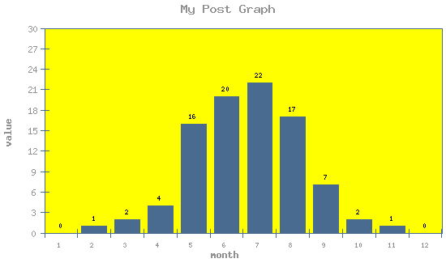

PostGraph
--------------------
easy to use PHP class for creating bar graphs

Quick example
--------------------
<?
include('postgraph.class.php');
$data = array(1 => 0, 1, 2, 4, 16, 20, 22,.17, 7, 2, 1, 0);
// creates graph object
$graph = new PostGraph(550,330);
// set titles
$graph->setGraphTitles('My Title', 'x axis description', 'y axis description');
// set format of number on Y axe
$graph->setYNumberFormat('integer');
// set number of ticks on Y axe
$graph->setYTicks(10);
// set data
$graph->setData($data);
$graph->setBackgroundColor(array(255,255,0));
$graph->setTextColor(array(144,144,144));
// set orientation of text on X axe
$graph->setXTextOrientation('horizontal');
// prepare image
$graph->drawImage();
// print image to the screem
$graph->printImage();
?>
Public Functions
--------------------
PostGraph($width, $height)
constructor, creates an PostGraph object.
Parameter width for width of graph image. If it is not defined, width is set to 400.
Parameter height for height of graph image. If it is not defined, height is set to 300.
setGraphTitles($mainTitle, $xTitle, $yTitle)
Set graph titles defined by user - main, x axis, y axis.
Parameter mainTitle is a main title of graph.
Parameter xTitle is a title of graph at x axe.
Parameter yTitle is a title of graph at y axe.
setColors($userColors)
Set all graph colors defined by user.
Parameter userColors is a RGB Color array for 8 colors - white, lines, bars, background, style, text, above bar and inside bar. Must be defined all.
setWhiteColor($userRGB)
Set graph colors defined by user.
Parameter userRGB is a RGB Color array.
setLinesColor($userRGB)
Set graph colors defined by user.
Parameter userRGB is a RGB Color array.
setBarsColor($userRGB)
Set graph colors defined by user.
Parameter userRGB is a RGB Color array.
setBackgroundColor($userRGB)
Set graph colors defined by user.
Parameter userRGB is a RGB Color array.
setStyleColor($userRGB)
Set graph colors defined by user.
Parameter userRGB is a RGB Color array.
setTextColor($userRGB)
Set graph colors defined by user.
Parameter userRGB is a RGB Color array.
setAboveBarColor($userRGB)
Set graph colors defined by user.
Parameter userRGB is a RGB Color array.
setInsideBarColor($userRGB)
Set graph colors defined by user.
Parameter userRGB is a RGB Color array.
setYTicks($ticks)
Set ticks on y axe.
Parameter ticks is a default value. Set ticks to max value of data. If max value is 0 then ticks is set to 1.
setYNumberFormat($format)
Set number format at y axe.
If parameter format is set to 'integer' then y axe have integer numbers. Otherwise, it can have floating point numbers.
setData($data)
Set data for post graph. $data is array of values.
Parameter data is used as graph data. Compute data summary, data count, find max value and set number of y ticks.
setXTextOrientation($orientation)
Set orientation of digits at graph x axe. Allowed parameters - 'horizontal', 'vertical'.
Parameter orientation specify orientation of digits at x axe.
drawImage()
Create graph image with functions. Create the image, initialise Colors and area, draw axis, bars and titles.
printImage()
Draw graph to the output.
Private functions and properties
--------------------
edit only if you know what you are doing
graphWidth Graph Image Width.
graphHeight Graph Image Height.
textPadding Graph Text Padding.
graphTitle Graph main Title at the top center.
$graphXTitle Graph Title at x axe.
graphYTitle Graph Title at y axe.
yTicks Number of Ticks on y axe.
yNumberFormat Format numbers at y axe.
yValueMode Mode that defines place of y numbers. 3 for outside of bar, 2 inside, 1 inside if bar height is bigger then 13.
textXOrientation Text orientation at x axe. Usually 'horizontal'.
data Graph data.
countData Count of data.
dataSum Summary of data.
maxData Maximum value of data.
maxTextLength Lenght of maximum value.
colorWhiteArray White color in RGB format.
colorLinesArray Line color in RGB format.
colorBarsArray Bar color in RGB format.
colorBackgroundArray Background color in RGB format.
colorStyleArray Style color in RGB format.
colorTextArray Text color in RGB format.
colorAboveBarArray Number color above the bar in RGB format.
colorInsideBarArray Number color inside the bar in RGB format.
initColors
Initialise all graph colors. White, lines, bars, background, style, text, above bar and inside bar.
initArea
Initialise graph area, draw background rectangle and fill with background color.
drawXAxe
Draw x axe with lines and numbers.
drawYAxe
Draw y axe with lines and numbers.
drawBars
Draw bars with number at top. Bars value is in variable data.
drawTitles
Draw titles of graph. Main title on the top center, verticaly on the left side and horizontaly on the botton.
computeDataSum
Compute data summary.
findMaxValues
Find maximum value of data and do special round with him.
specialRound
Do special round on max value of data. Round at first digit for 2 digit int number. Round at second digit for bigger int number.
Parameter number can be float or int number.
Returns variable number with special round number.
|